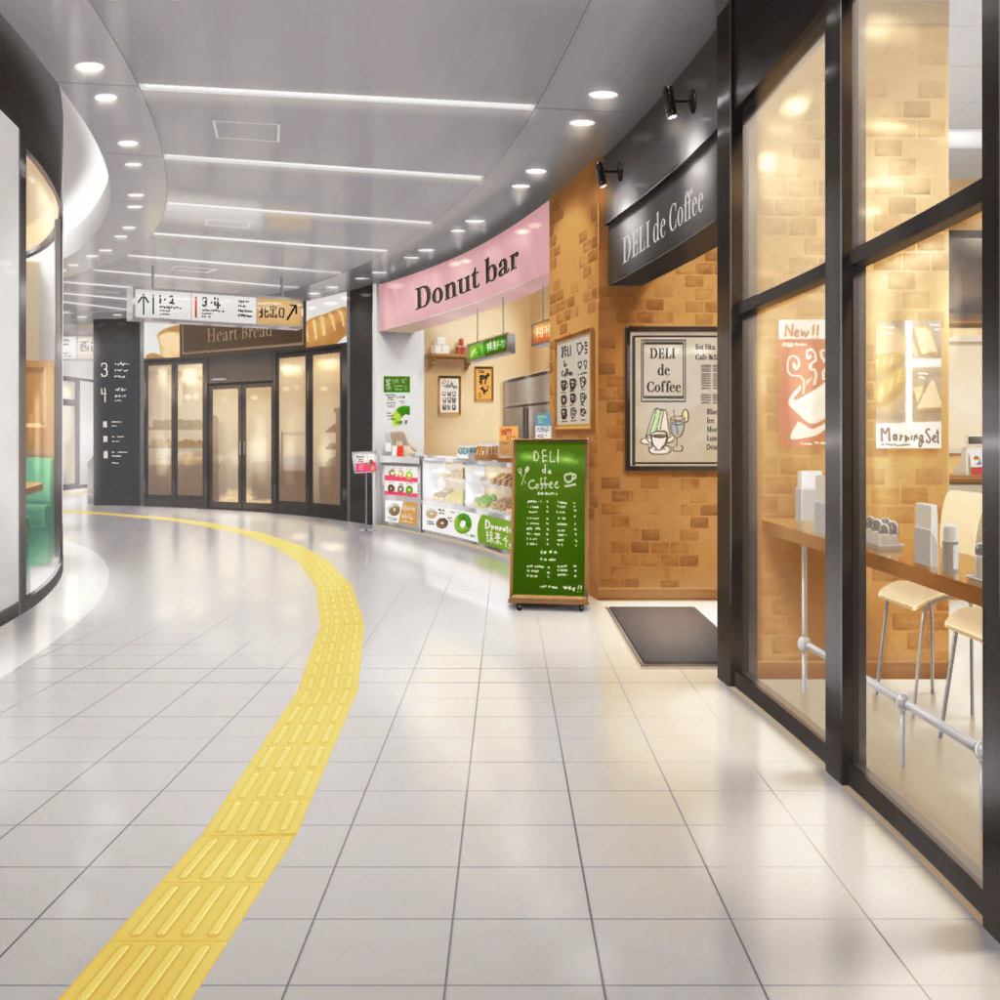

３駅隣の駅構内
花音
３駅先まで来ちゃったね……
千聖
ダイヤが乱れていたみたいね。
てっきり乗る予定の電車だと思ったけど、
その前の急行電車だったなんて……
花音
もっと私が確認すればよかったね。
千聖ちゃん、電車は苦手なんだから……
千聖
いえ、私のほうこそ……
電車が来ると思って、慌ててしまったわ
千聖
でも、大丈夫よ。引き返せばいいだけだもの。
電車はすぐに来るわ
花音
そうだね。ええと、次の電車は……
アナウンス
お客様にお知らせいたします。
車両の一部に故障が発生したため、しばらく運転を見合わせます。
お急ぎのお客様は……
花音
このアナウンスって、私達が乗る路線の案内だよね……？
千聖
ええ。電車、動かないみたいね……
花音・千聖
…………
花音
そ、そうだ！ カフェまで歩けないかな？
千聖
えっ？ ここから隣の駅まで行くってこと？
花音
１駅ならそんなに距離はないし、歩けると思うんだけど……
千聖
……そうね。
いつ動くかわからないものを待つより
そっちのほうがいいわ。歩きましょう
花音
うん、出口はこっちだよ、千聖ちゃん
千聖
待って、花音！ そっちは乗り換え口よ！

公園
千聖
この公園を抜ければ、カフェまであと少しね
花音
なんだか賑やかだね？
何かイベントをやってるみたいだよ？
千聖
あそこに看板があるわ。
えっと……
花音
手作り雑貨のイベントなんだね。
見て、お店がたくさんあるよ
千聖
ええ、そうね。
でも今日の目的はカフェなのだし、寄り道をするのは……
花音
あ、そ、そうだよね
花音
…………
千聖
……わかったわ、少し見ていきましょうか
花音
いいの？
千聖
ええ、ここに来たのも何かの縁だと思うから
花音
ありがとう、千聖ちゃん！
花音
あっ、ねぇ見て。
あの帽子、千聖ちゃんに似合いそうだよ
千聖
あっちの水色のワンピースは花音に似合いそうね
花音
えへへ、そうかな？
どのお店もかわいいものがたくさんあるね
千聖
そうね。かなり凝ったデザインのものもあるし……
全部手作りだなんて感心するわね
千聖
あら、このワンピース……
花音
気に入ったものあった？
千聖
いえ、彩ちゃんに似合いそうだと思って。
こういう感じの服が好きみたいだから
千聖
こっちの白い鞄は日菜ちゃんが好きそうね……
似たデザインの鞄を持っていたわ
花音
言われてみれば、彩ちゃんこういう服よく着てるかも
千聖
あっちの和風小物のお店はイヴちゃんが見たら喜びそうね
千聖
……ん？ このサングラス……
花音
どうかしたの？
千聖
麻弥ちゃん、あまり冒険をするタイプじゃないけど、
クールな感じのファッションも似合うと思うの
千聖
このサングラスなら、麻弥ちゃんにも……あ！
千聖
ごめんなさい、さっきからメンバーのことばっかり……
花音
ううん、わかるよ。
私も買い物してるとハロハピのみんなのこと思い出しちゃうから
花音
一緒にいるとどんなものが
好きなのかわかるし、気になっちゃうよね
千聖
え、ええ、そうね……
千聖
（でも、前よりみんなのことを考える時間が増えた気がする……）
花音
あっ、ねぇねぇ千聖ちゃん！ この指輪かわいいよ！
千聖
おもちゃの指輪……色違いでたくさんあるのね。
小さい頃、こういう指輪好きだったわ
花音
ねぇ、せっかくだしお揃いで買わない？
千聖
そうね。ここに来た記念にいいかもしれないわね
千聖
それなら……花音にはこの水色の指輪、どうかしら？
花音
わあ！ それ、かわいいなって思ってたんだ！
千聖ちゃんにはこの優しい黄色の指輪はどうかな？
千聖
あら、私もそれが気になっていたの
千聖
一緒にいるとどんなものが好きかわかる……
ふふっ、あなたの言った通りね
花音
えへへ、そうだね。すみません、これくださーい
花音
……あっ、そうだ。
ハロハピのみんなにもお土産買っていこうかな？
花音
千聖ちゃんもパスパレのみんなに何か買っていく？
千聖
ええ、せっかくだからそうするわ。
それじゃあ、もう少しいろいろ見て回りましょう